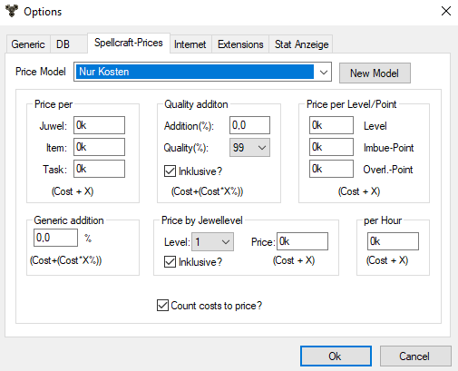

Here, different settings can be made to the price model of the Bannazuberer. The dialog about options is called ... in the options menu.
Pricing model
Here is the name of the pricing model, which is just being changed. The names of all pricing models are automatically taken over in the options menu and can be selected there.
New model
A new pricing model is announced.
Price Pro
Jewel: Price per jewel in the configuration.
Item: Price per enchanted item.
- Order: Price per banner wizard order. So only once per configuration.
Quality surcharge
Here a quality surcharge depending on the quality of the jewelery can be demanded. When "inclusive?" is not approved, this award will not be made.
Price per level / point
Level: An upgrade for each level of a jewel.
Imbue point: Price per used imbue point.
- Overload point: Price per overloaded imbue point.
General surcharge
A general appreciation of the complete configuration.
Price according to jewel level
Here a price tag can be set for the prices of the jewels of one level. When "inclusive?" is not approved, this award will not be made.
per hour
Here the payment per working hour can be indicated.
Include costs in the price
If this option is selected, the actual raw material costs will not play a role.
 Tip:
The pricing models are stored in the program directory under opt_SC_Name
of the pricing model.xml. An intruder can pass these files on to its
customers, who in turn copy them into the program directory.
Tip:
The pricing models are stored in the program directory under opt_SC_Name
of the pricing model.xml. An intruder can pass these files on to its
customers, who in turn copy them into the program directory.